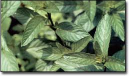

Punch up the flavor of a salad or a cream sauce with a sprinkling of minced fresh mint. Or, make yourself a cup of brisk mint tea for the pleasure of the bracing flavor, gentle relief from a troubled tummy or for a sure-fire cure for the hiccups.
What would a julep be without the mint? Or a creamy Middle Eastern raita? The many uses of mint (Mentha) range from making our favorite drinks and dishes, settling upset tummies, scenting our hair and homes, and brightening bouquets to repelling flies, ants and other unwelcome insects from our patios, decks and back porches.
In ancient Rome, Pliny the Elder, one of the world’s first natural historians, observed that mint’s aroma “reanimates the spirit.” He probably was referring to Mentha spicata, wild spearmint.
In North America, early settlers discovered that mountain mint (Pycnanthemum pilosum) made a darn fine tea and helped ease the pain of toothaches, too. The medicinal qualities of mint are due to its menthol, which aids digestion, calms hiccups, soothes intestinal cramps and just happens to taste wonderful, too. With the exception of the pennyroyals (M. pulegium [European] and Hedeoma pulegioides [North American]), which contain toxic compounds that can cause liver failure and even death, most mints can be used freely in cooking and for calming troubled tummies.
These days, gardeners can choose from a dazzling array of flavorful mints in addition to the old favorites, peppermint and spearmint. Some new varieties even carry the subtle s cents of apple, pineapple and chocolate. Peppermint still offers the strongest aroma, making it the best choice for fragrant bouquets, fresh or dried, and for room and closet freshening. For culinary purposes, including in drinks, spearmint is tops. ‘Kentucky Colonel’ spearmint is perfect in the famed Southern mint julep, and limey-tasting ‘Margarita’ is great in margaritas. Any cold drink - including chilled milk - gets a flavor lift from a bruised sprig of mint.
Cooking tips
In cooking, fresh mint gives the best flavor and appeal; use young leaves pinched from stem tips for the sprightliest flavor. In fruit salads, fresh mint partners well with apples, pears or strawberries. To dress poached apples, pears and peaches, make a pesto of fresh mint, a little sugar and vinegar.
Fresh mint also is essential in many Middle Eastern dishes, including tabouli, a chilled salad made from cracked wheat (bulgur), parsley, tomatoes and mint (recipe below).
Other grain-based salads, such as brown rice with grapes and toasted walnuts or couscous with raisins and almonds, get a flavor boost from minced mint, too. And a little mint added to any cream sauce (at the end of the cooking time) makes a fine topping for steamed asparagus or peas.
Dried mint makes the best tea. To dry your own, gather stems in early summer, before plants flower or become stressed by hot weather. Tie the stems in small bunches and hang them in a warm, dark place or arrange the loose stems on a cookie sheet and bake in a slow oven (150 degrees) until dry. Store cooled, dried mint leaves whole in airtight containers; when you’re ready to use them, just crumble the amount you need.
Growing Your Own
Spearmints usually are more vigorous than peppermints, but both are eager plants that spread by sending out wandering shoots, which grow a couple of inches below the soil’s surface. For this reason, many gardeners prefer to grow them in containers or in small beds where their spread can be checked.
Hardy to Zone 5 and accepting of either full sun or partial shade, mints are one of the first plants to start growing in spring. They flower in midsummer and, if you prune them back after flowering, and give adequate water and fertilizer, they will regrow by fall.
If your winters are too cold for mints to stay outdoors, you can grow them in containers that are moved into a cool room in late fall and watered occasionally through the winter.
The best-flavored mints are hybrids, which means they do not produce true seeds and must be propagated vegetatively to ensure good flavor is retained. Buy new plants from a nursery, beg rooted starts from a friend or root some fresh sprigs you buy in the grocery store.
Tabouli
Perfect for picnics or in wraps and pitas, tabouli is a nutritious, fresh-tasting salad. This method steams the onions, bringing out their sweetness and softening their crunch. The lemony-tart leaves of French sorrel, if you have it, are a terrific addition; a sprinkling of feta cheese and black olives makes a main course.
2 cups water
1/2 cup chopped onion
1 clove garlic, minced
1 cup bulgur wheat (medium or fine)
1/2 large cucumber, peeled and diced
1 large tomato, diced
1/2 cup parsley, minced
1/2 cup mint, minced
4 tablespoons olive oil
4 tablespoons lemon juice, (about 1 lemon)
1/2 teaspoon salt
1/4 teaspoon freshly ground pepper
Bring the water to a boil in a medium saucepan with a tight-fitting lid. Add the onion, garlic and bulgur, and stir. Remove from the heat, cover and set aside for 20 minutes. In a large bowl, gently mix the cucumber, tomato, parsley and mint. In a small bowl, stir together the lemon juice, olive oil, salt and pepper; pour the dressing over the cucumber-tomato mixture and toss. Fluff the bulgur mixture with a fork and gently mix it with the other ingredients. Serve chilled or at room temperature.
|
 |
|
|